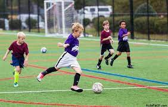

ACCIONES TÉCNICAS OFENSIVAS Anticipación ofensiva. Cabeceo (Pase) Cabeceo (Tiro) Cobertura técnica. Conducción. Control de balón. Control orientado. Dribleo.
La Escuela de Técnicos de Vicente López es una de las mejores instituciones habilitadas por ATFA para formar Directores Técnicos de Fútbol en Argentina. Conocelá por dentro. La Escuela de Técnicos nº62 "José Urben Farías" funciona desde 1993 formando Directores Técnicos Nacionales de Futbol.
Las escuelas de fútbol están orientadas hacia el desarrollo completo de las capacidades y habilidades de los jugadores. Estas tratan de mejorar sus cualidades volitivas tan fundamentales en los deportes de equipo, tales como la voluntad, el esfuerzo y la cooperación.
